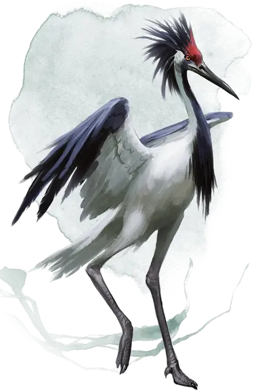

Эблис
Eblis
Большой Монстр, нейтрально-злой

Класс Доспеха 13
Хиты 26 (4к10 + 4)
Скорость 30 футов, летая 40 футов
| мод | спас | ||
|---|---|---|---|
| СИЛ | 15 | +2 | +2 |
| ЛОВ | 15 | +2 | +2 |
| ТЕЛ | 14 | +2 | +2 |
| мод | спас | ||
|---|---|---|---|
| ИНТ | 4 | −3 | −3 |
| МДР | 15 | +2 | +2 |
| ХАР | 6 | −2 | −2 |
Навыки Восприятие +4
Чувства пассивное Восприятие 14
Языки Общий, Ауран
Опасность 1 (200 опыта)
Бонус мастерства +2
Особенности
Врождённое колдовство. Базовой характеристикой эблис является Интеллект (Сл спасброска заклинаний 11). Он может накладывать следующие заклинания, не нуждаясь в материальных компонентах:
• 1/день каждое: размытый образ [blur], гипнотический узор [hypnotic pattern], малая иллюзия [minor illusion].
Действия
Мультиатака. Эблис совершает две атаки клювом.
Клюв. . Рукопашная атака оружием: + 5 к попаданию, досягаемость 5 фт., одна цель. Попадание: 5 (1к4 + 3) колющего урона.
Описание
Эблис считается реинкарнацией злых людей, которые были наказаны богами за воровство и похищения людей. Эти умные злые журавли достигают в высоту 8 футов и откладывают яйца, как это делают обыденные птицы. Они могут манипулировать объектами при помощи своих клювов и ног.
Эблис пытаются склонить других существ, заставляя выполнять их волю, следуя своим корыстным побужденьям. Они живут, чтобы уничтожить существ, которые оскорбляют их и восхищаются тем, что заманивают гуманоидов к неожиданной смерти. Эблис также любит собирать сокровища, которые они иногда используют, чтобы наградить тех, кто служит им. Они строят примитивные хижины и гнезда из травы и камыша, где они прячут свои сокровища.